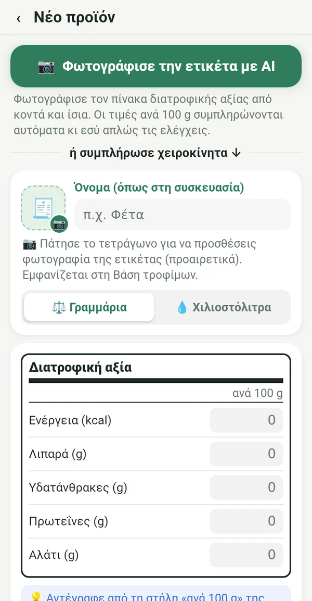
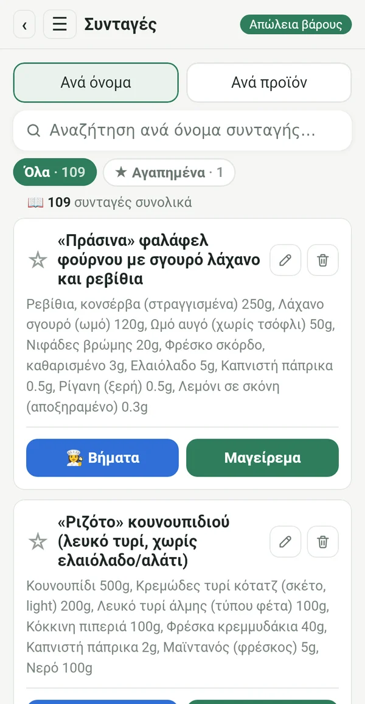
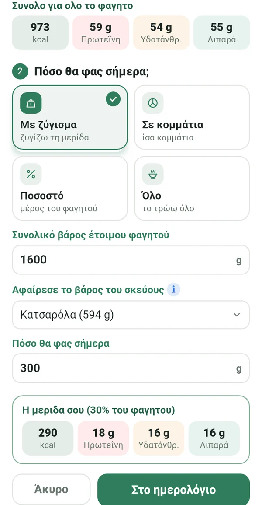
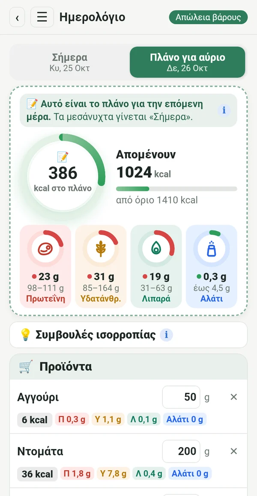
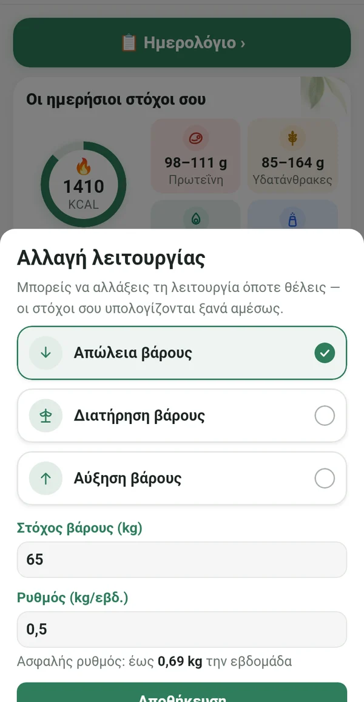
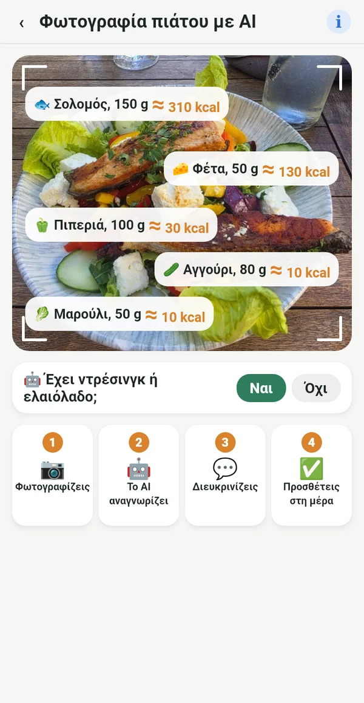

Ό,τι χρειάζεσαι, τίποτα περιττό

Από την ετικέτα, όχι από ξένες βάσεις
Αντιγράφεις τις τιμές ανά 100 g από τη συσκευασία ή απλώς φωτογραφίζεις την ετικέτα. Οι αριθμοί συμφωνούν με ό,τι τρως πραγματικά.
📷 Μια φωτογραφία της ετικέτας με AI συμπληρώνει τα πεδία για σένα
Το ψηφιακό σου βιβλίο μαγειρικής
Οι συνταγές από το τετράδιο της γιαγιάς, από τα βιβλία μαγειρικής στο ράφι και από τις αγαπημένες σου ομάδες, όλες σε ένα μέρος. Τις καταχωρείς μία φορά και τις χρησιμοποιείς πάντα.

Η ακριβής μερίδα από όλη την κατσαρόλα
Ζυγίζεις το έτοιμο φαγητό μαζί με την κατσαρόλα. Το Macrolia αφαιρεί την κατσαρόλα και υπολογίζει ακριβώς πόσο έφαγες.

Σχεδιάζεις, ψωνίζεις, τρως
Από σήμερα σημειώνεις τι θα φας αύριο. Αγοράζεις μόνο ό,τι χρειάζεσαι και τα μεσάνυχτα το πλάνο γίνεται η μέρα σου.

Απώλεια, διατήρηση ή αύξηση βάρους
Όταν φτάσεις στον στόχο, περνάς σε «Διατήρηση βάρους». Αν αλλάξει η ζωή σου, απλώς αλλάζεις λειτουργία. Το ημερήσιο όριο ακολουθεί την εξίσωση Mifflin-St Jeor και τις κλινικές οδηγίες, με ασφαλή ρυθμό.

Και έξω ξέρεις τι τρως
Φωτογραφίζεις το πιάτο και το AI αναγνωρίζει τι έχει. Η τιμή είναι κατά προσέγγιση και σημειώνεται με ≈. Καλύτερα κατά προσέγγιση παρά τίποτα.
Θερμίδες από κίνηση
Μέσω Health Connect, από το κινητό, ρολόι ή εφαρμογή γυμναστικής. Εσύ επιλέγεις πόσες προστίθενται στο όριο.
Βάρος, γράφημα, αναφορά
Γράφημα βάρους, φωτογραφίες πριν και μετά μόνο για σένα και αναφορά σε PDF και Excel.
Συμβουλές ισορροπίας
Σύντομες υποδείξεις όταν η πρωτεΐνη ή τα λιπαρά βγαίνουν εκτός στόχου. Βοηθά, δεν διατάζει.
Για κάθε γυναίκα που θέλει να μείνει σταθερή
Το γιο-γιο δεν έρχεται από τη δίαιτα. Έρχεται όταν σταματάς.
Μετά το μωρό, ξαναμπαίνεις στον ρυθμό σου.
Η ηλικία δεν είναι λόγος να τα παρατήσεις.
Και στο εστιατόριο ξέρεις τι να παραγγείλεις.
Όποια τηρεί ακριβώς το πλάνο, παίρνει ακριβές αποτέλεσμα.
Τα δεδομένα σου είναι μόνο δικά σου
Όλα μένουν στο κινητό σου. Χωρίς εγγραφή, διαφημίσεις ή παρακολούθηση. Η φωτογραφία για ανάλυση με AI στέλνεται μόνο για τον υπολογισμό και δεν αποθηκεύεται.
Συνδρομή
Μηνιαία ή ετήσια συνδρομή, και οι δύο με 7 ημέρες δωρεάν. Ακυρώνεις όποτε θέλεις στο Google Play.
Σε 14 γλώσσες, με φωτεινό και σκοτεινό θέμα.
Ερωτήσεις
Πότε κυκλοφορεί η εφαρμογή;
Ετοιμάζουμε την κυκλοφορία στο Google Play. Γράψε μας και θα σε ειδοποιήσουμε όταν είναι έτοιμη.
Υπάρχει έκδοση για iPhone;
Προς το παρόν μόνο για Android. Έκδοση για iPhone σχεδιάζεται αργότερα.
Γιατί δεν υπάρχει σαρωτής barcode;
Οι βάσεις barcode συμπληρώνονται από χρήστες και συχνά είναι λάθος ή παλιές. Στο Macrolia κάθε τιμή προέρχεται από την ετικέτα, γι' αυτό οι αριθμοί είναι ακριβείς.
Πόσες φωτογραφίες με AI μπορώ να κάνω;
Έως 100 φωτογραφίες τον μήνα, για ετικέτες και πιάτα μαζί.